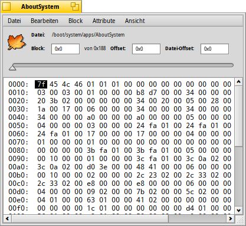
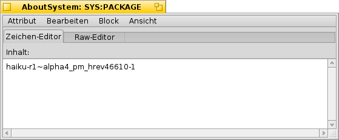

DiskProbe
DiskProbe
| Deskbar: | ||
| Ort: | /boot/system/apps/DiskProbe | |
| Einstellungen: | ~/config/settings/DiskProbe_data |
DiskProbe dient zum Anzeigen und Bearbeiten von Daten in Dateien oder auch direkt auf dem Datenträger. Es ist ein Tool, das wirklich auf unterster Ebene ansetzt. Dadurch kann eine unbedachte Änderung natürlich viel zerstören!
Beim Start von DiskProbe entscheidet man zuerst, ob mit einer Datei oder einer Partition gearbeitet werden soll. Danach erscheint dieses Programmfenster:

Es wird immer ein Datenblock angezeigt, dessen Größe über angepasst werden kann. Am linken Rand ist der Abstand zum Blockbeginn zu sehen, in der Mitte die Daten als HEX-Werte und rechts dasselbe als ASCII-Zeichen.
Von Datenblock zu Datenblock kann mit dem Schieberegler, oder durch ALT ← und ALT → gesprungen werden. Zwischen HEX- und ASCII-Spalte wird mit TAB gewechselt.
Das Menü zeigt die momentane Auswahl nicht nur in beiden Endian-Formaten (und in HEX oder Dezimal, je nach Einstellung mit ), es interpretiert die Auswahl auch als anspringbaren Block-Offset. Es erscheint ausgegraut, falls diese Position außerhalb der Datei oder des Datenträgers liegt.
Dieses Feature ist besonders hilfreich beim Untersuchen von Dateisystemen, weil diese oft Zeiger auf andere Blöcke enthalten.
Wenn die bearbeitete Datei Attribute enthält, kann über das Menü ein spezielles Hex-Editor Fenster geöffnet werden. Als Beispiel, hier das Attribut SYS:PACKAGE der Anwendung AboutSystem:

Je nach Art von Attribut, erhält man neben dem Raw-Editor unterschiedliche Editor-Reiter. So gibt es einen Editor für Text, MIME-Typen und einen Betrachter für das Icon.